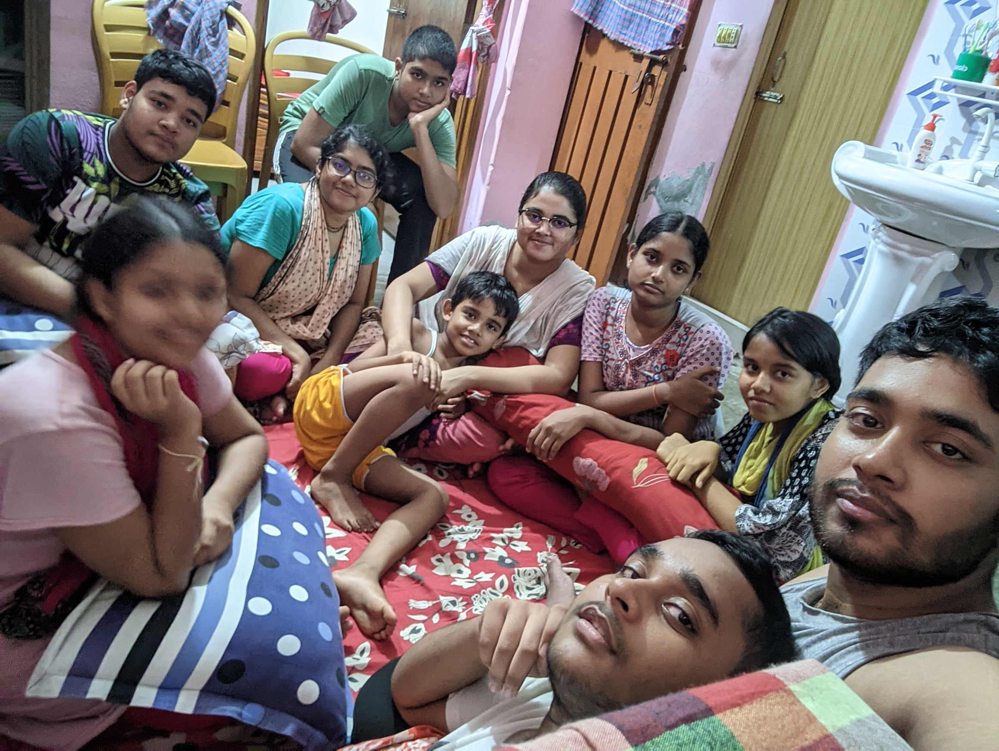

Twelve unique paths, one shared heritage. Explore the interactive stories, timelines, and relationships of our close-knit modern family.

Search, sort, and filter through the siblings to learn about their careers, creative endeavors, and personalities.
A journey through the years showing the spacing, birth order, and key milestones of the Sterling siblings.
Though distinct individuals, the Sterling siblings share close-knit circles and collaborations. Click a circle to explore their bonds.
Click on any of the connection clusters on the left to see how they collaborate, study, or play together.